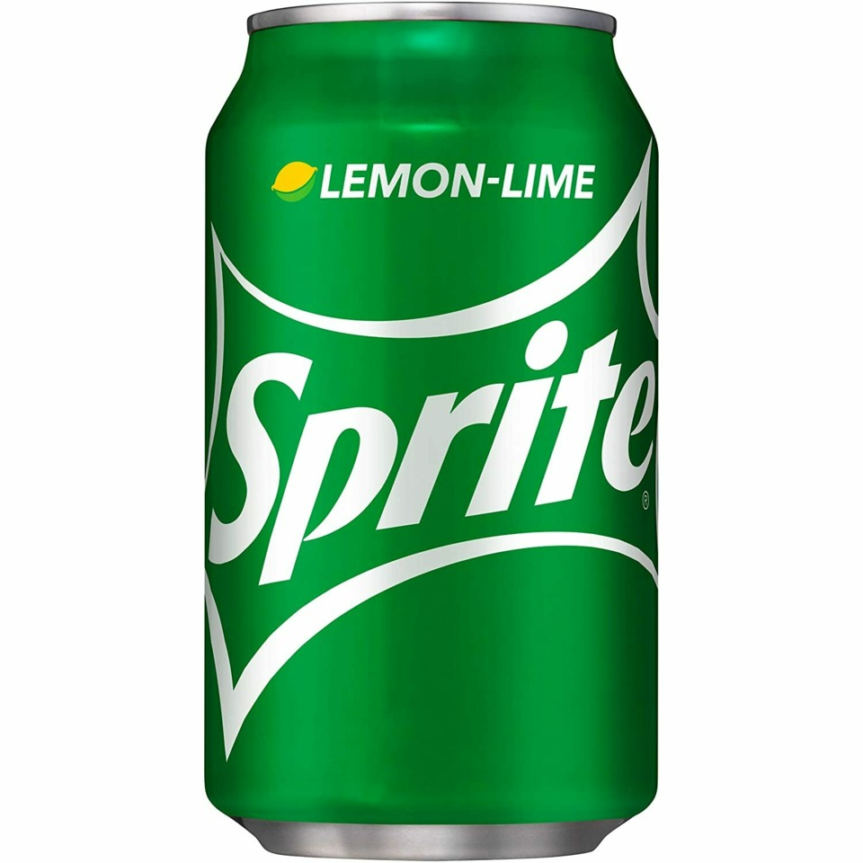
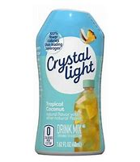
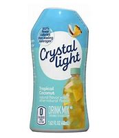

Cooking is fun so i will teach you some easy recipes #1 potatoes
if you get yukon gold potatoes and slice them into fourths
and season them with mortons all seasoning chilli powder onion powder
and crushed black pepper and cook them 8 minutes 400 degrees in an air fryer
if you like sorbet then this is the best recipe for you so to start this off you will need honey, lemon juice frozen mango and sugar
use 2 teaspoons of honey 1 or 1 half cups of frozen mango put 3 table spoons of sugar and blend until smooth and serve.
you can also make strawberry sorbet
with frozen strawberries instead of mango and the same other ingredients
#1 a drink recipe if you go to the drink mix aisle in a store get these listed
go to this website for more recipes
 
